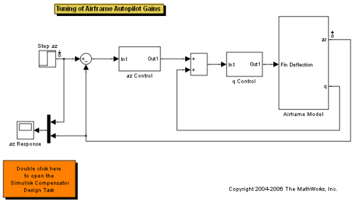
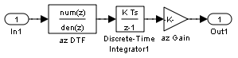
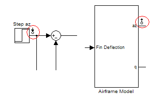
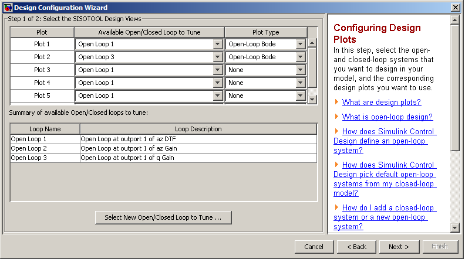
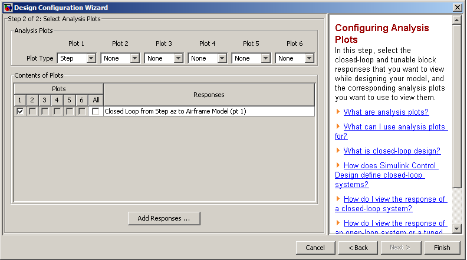
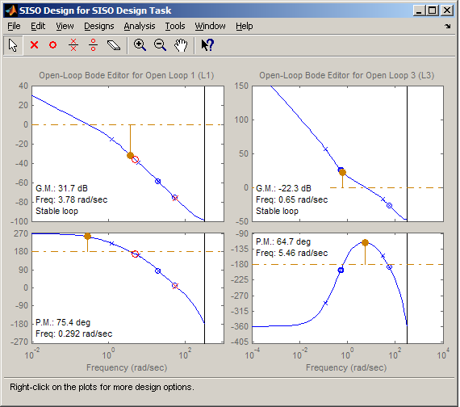
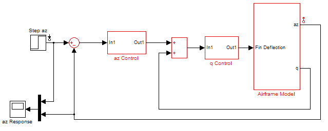
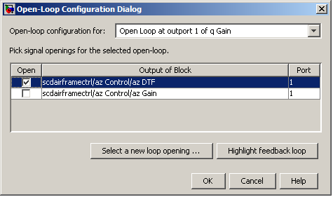
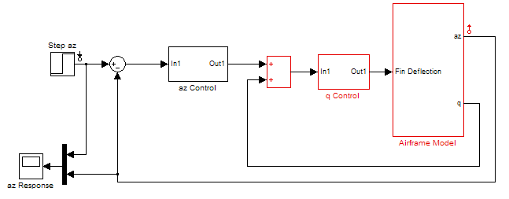
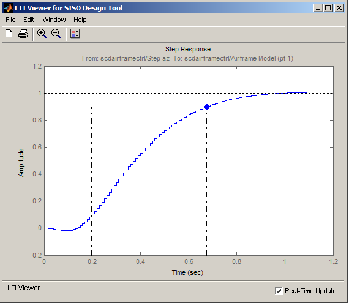

Cascaded Multi-Loop/Multi-Compensator Feedback Design
Contents
Opening the Model
Take a few moments to explore the model.
open_system('scdairframectrl');
 Design Overview
This demonstration introduces the process of designing two cascaded feedback loops so that the acceleration component (az) tracks reference signals with a maximum rise time of 0.5 seconds. The feedback loop structure in this example uses the body rate (q) as an inner feedback loop and the acceleration (az) as an outer feedback signal.
The two feedback controllers being tuned are:
- scdairframectrl/q Control - A discrete time integrator and a gain block q Gain stabilize this inner loop.
open_system('scdairframectrl/q Control')

- scdairframectrl/az Control - A discrete time integrator, a discrete transfer function, and a gain block az Gain stabilize the outer loop.
open_system('scdairframectrl/az Control')
 Decoupling Loops in a Multi-Loop Design
The typical design procedure for cascaded feedback systems is to first design an inner loop and then an outer loop. In a Simulink® Compensator Design Task it is possible to design both loops simultaneously; by default, when designing a multi-loop feedback system the coupling effects between loops are taken into account. However, when designing two feedback loops simultaneously it might be necessary to remove the effect of an outer loop when tuning an inner loop. In this example the design of the inner feedback loop (q) should be performed with the effect of the outer loop removed (az). The example demonstrates how to decouple feedback loops in a Simulink Compensator Design Task.
Creating a SISO Design Task
In this example a Simulink Compensator Design Task will be used to create a SISO Design Task to tune the compensators in the feedback system. There are two alternatives for creating the SISO Design Task:
- Launch a preconfigured Simulink® Control Design™ task by double clicking on the subsystem in the lower left hand corner of the model.
- Work through the following procedure to create the SISO Design Task.
Starting a New Design
Step 1 Start a new Simulink Compensator Design Task for the model scdairframectrl.mdl by choosing Tools -> Control Design -> Compensator Design from the Simulink model.
Step 2 Select the following blocks to tune:
- scdairframectrl/q Control/q Gain
- scdairframectrl/az Control/az Gain
- scdairframectrl/az Control/az DTF
Step 3 Select the closed loop signals:
- Input: scdairframectrl/Step az - output port 1
- Output: scdairframectrl/Airframe Model - output port 1

Step 4 Click the Tune Blocks... button to launch the Design Configuration Wizard.
Simulink Control Design automatically recognizes 3 potential feedback loops for open-loop design:
- Open Loop at outport 1 of scdairframectrl/az Control/az DTF
- Open Loop at outport 1 of scdairframectrl/az Control/az Gain
- Open Loop at outport 1 of scdairframectrl/q Control/q Gain
In step 1 of the wizard select the loops to tune:
- Plot 1: Loop to Tune - Open Loop at outport 1 of scdairframectrl/az Control/az DTF, Plot Type - Open-Loop Bode
- Plot 2: Loop to Tune - Open Loop at outport 1 of scdairframectrl/q Control/q Gain, Plot Type - Open-Loop Bode

In step 2 of the wizard select Step response for Plot 1 and add the Closed Loop from scdairframectrl/Step az to scdairframe/Ariframe Model (pt 1) to this plot to view the closed loop response of the feedback system.

After completing the wizard a SISO Design Task node is created. Use this task node to complete the design.
Removing the Effect of an Outer Feedback Loop
The SISO Design Task is ready to simultaneously design the feedback loops. In the Bode editors (see the image below) click on the left hand plot (outer feedback loop, az) and increase the gain of the feedback loop. Note that the response of the right hand plot changes. This is a result of the coupling between the feedback loops. However, a more systematic approach is to first design the inner feedback loop, q with the outer loop open.

To remove the effect of the outer loop (az) when designing the inner loop:
Step 1 From the SISO Design Task node select the Architecture panel and click the Configure Loops... button.
Step 2 In the Open-Loop Configuration dialog select the Open-Loop configuration for: Open Loop at outport 1 of scdairframe/q Control/q Gain. This displays a list of possible locations to open feedback loops in the model. To see the current coupling between the loops click on the Highlight feedback loop button. This will highlight blocks in the current feedback loop.

To open a feedback loop, select a block output from the list. For this example, to remove the effect of the outer acceleration loop, select scdairframe/az Control/az DTF.

Click on the Highlight feedback loop button. This now highlights only the inner feedback loop; the outer loop is not included.

Step 3 Return to the graphical editor and change the gain of the outer acceleration loop. The response of the inner feedback loop does not change.
You can now complete the design of the inner loop without the effect of the outer loop and simultaneously design the outer loop while taking the effect of the inner loop into account.
Completing the Design
The SISO Design Task contains 4 methods to tune a control system:
- Use the Compensator Editor panel to manually tune the parameters of each compensator. See the demo "Tuning Simulink Blocks in the Compensator Editor".
- Configure Design Plots in the Graphical Tuning panel and the them to design the poles, zeros, and gains of the compensators using Root Locus, Open/Closed-Loop Bode Plots, and Nichols plots.
- Use the Optimization based tuning option in the Automated Tuning panel (requires Simulink® Design Optimization™) to tune the compensators using both time and frequency domain design requirements. See the demo "Airframe Controller Tuning".
- Use the PID tuning, IMC tuning, and LQG synthesis options in the Automated Tuning panel to compute initial parameters for the compensators based on tuning parameters such as closed-loop time constants.
Completed Design
The design requirements can be met with the following controller parameters
- scdairframectrl/q Control/q Gain:
K_q = 2.7717622
- scdairframectrl/az Control/az Gain
K_az = 0.00027507
- scdairframectrl/az Control/az DTF
Numerator = [100.109745 -99.109745]
Denominator = [1 -0.88893]
The response of the closed loop system is shown below:

Writing the Design to Simulink
You can then test the design on the nonlinear model by clicking the Update Simulink Block Parameters button. This writes the parameters back to the Simulink model.
bdclose('scdairframectrl')